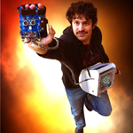
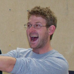

|

Chris was formerly a pizza delivery boy, but after delivering to Tony Stark an especially delicious pepperoni pizza, Mr. Stark hired him on as the lead systems engineer for special projects. Chris's first idea was to adapt the iron man suit to remote controlled boats because, as he put it, "In the future, Iron Man will be to fat and lazy to fly around, and will need a boat to do his bidding." The boat's first mission was to play a game of king of the hill against other boats made by Stanford Students. |
|
While traveling though Barcelona, Tony met Stellios, a traveling street performer. Stellios’ act, where he spray-painted his body with metallic gold and red paint, imitated robotic motion, and created sounds with a kazoo in his mouth, impressed Tony immensely. Tony appointed Stellios to be the Head Designer of his Powered Exoskeleton Division, which was responsible for the development of the Atoll Capturing Controller product line. Tony explained to this colleagues that Stellios’ performance had proved that he understood the finesse of robotic manipulator motion. Stellios soon became known in his division as the master of systematic, good coding practices. |
|
Before joining the Stark Industries' newly created Atoll Capturing Division, Eric worked as a bartender for a party hosting company. While tending to one of Tony’s grandiose parties, he mixed a cocktail for Tony that was so delectable that Tony immediately appointed him to be the Director of Systems Integration for the Atoll Capturing Division. Tony explained to his baffled colleagues that if someone has the sense to mix a good drink, well then they can do anything, especially involving microcontrollers. Since working at Start Corporation, Eric quickly overcame his initial incompetence with a hard study of microcontrollers, mechanical design, and circuit fabrication, and became known for his fondness of state machines. |


Team Rainsgineers
Advising Team
|
Tony Stark (also known by some as Ed Carryer) is a legend among men. While he is not running his multi-billion dollar engineering corporation, he can often be found driving cars at unsafe speeds, or continuing his development of powered exoskeletons. |
|
General James Rhodes (also known by the alias Ryan Andrade) has a close working relationship with Mr. Stark, often testing his knew mechatronics hardware. He is known by those under his command as an inspiring leader, but known by his adversaries as “The Man with the Long Hair”. |
|

Whiplash (real name William Grossman) had trained from the early age to program microcontrollers and slice objects in half with a whip. After a failed attack on Tony, Whiplash decided to join forces for the good of mechatronic technology. He is often feared by his colleagues due to his terrifying past and tendency to bring a whip to work. |